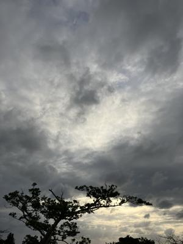
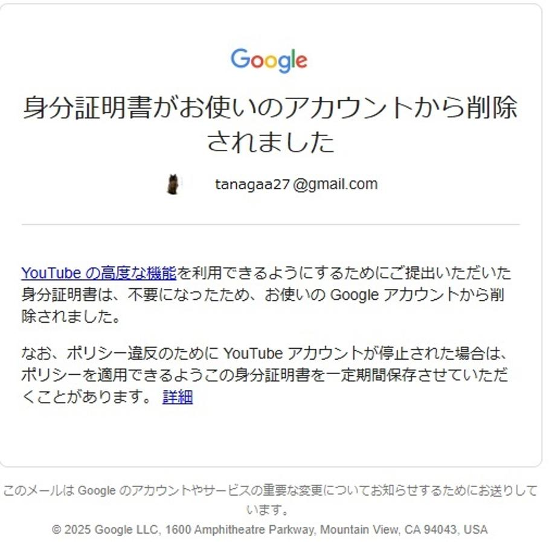

うるがいの話 ある日
最新: ユーチューブ上級者【うるがいの話 ある日】とは 一日だけのプログです
『うるがいの話』の最新一日だけのプログで、通信料が少なく経済的だ。カニの画像をクリックすると全ての日付が載る『うるがいの話』サイトを表示します
|
|
【うるがいの話】 うるがい(ｳﾙｶﾞｲ urugai)とは、『もずくがに』の名前でとても大きくなります。 |
|---|---|
|
|
【カミマヤーの話】 猫のことを方言でマヤーといいます。カミマヤー（kamimayaa）とは、神の猫のことです。 |
|
【たながぁの音楽】 たながぁ（ﾀﾅｶﾞｰ tanagaa）とは手長えびのことで、何種類かあり大きいのは車 エビぐらいになります。 |

|
【ぶながぁの話】 ぶながぁ(ﾌﾞﾅｶﾞｰ bunagaa)とは、赤い髪の毛、赤い身体、そして身長は１ｍ２０ｃｍ ぐらい、川の蟹を食べているの目撃された。場所は沖縄県国頭郡大宜味村のと ある村僕の隣近所に住んでいる爺さんから、聞いた話です。 |
|
|
【ギーマの話】 ギーマ(giima)とは、山原の里山に咲くスズランに似た、 花を付けます。実は食べられます、 気が付くと口の周りが紫になっています。 |
2025年04月03日 (木）ユーチューブ上級者
15:48

『身分証明書がお使いのアカウントから削除されました』とメール
が届いた。

ン？、おお、２年前純粋チャンネルの『たながぁ２７を新たに作成し
、楽譜データのダウンロードが行えるにしたところ身分証明書を添付
してと指示されたのだった。
2023年04月02日 ユーチューブ上級者機能
そもそも上級者とは何なんだろう
上級者向け機能：積極的に活動していて、十分なチャンネル履歴を
構築している。ＹｏｕＴｕｂｅクリエイターの場合は、上級者向け
機能の利用が自動的に承認される可能性が高くなります。
１．上級者向け機能をすぐに利用したい場合は、有効な身分証明書
または動画による本人確認を行うことができます。
２．上級者向け機能の利用を継続するには、引き続きＹｏｕＴｕｂ
ｅのコミュニティガイドラインを遵守し、ポジティブなチャン
ネル履歴を維持する必要があります。
なるほど、積極的に活動していて・・・に該当するので、身分証明
書が不要となったわけだ。『ぶながぁ うるがい』は、身分証明書
を求められたことがないが、動画をアップするに従っていつの間に
か上級者になっていたのだろう、なるほど。
ところで、明日念願の海外へ行きます、本来の意味でパスポートを
使います！。日曜日の夜に帰ります、ということで金、土、日曜日
のプログの更新はないです。
去年の今頃の、悲惨な日と比べ、介護から解放されたことから、行
える海外旅行である。
2024年04月03日 毎日が残業
では、ごきげんよう